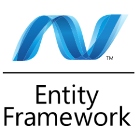

ORM



Un mapping objet-relationnel est un type de programme informatique qui se place en interface entre un programme applicatif et une base de données relationnelle pour simuler une base de données orientée objet.
- Wikipedia